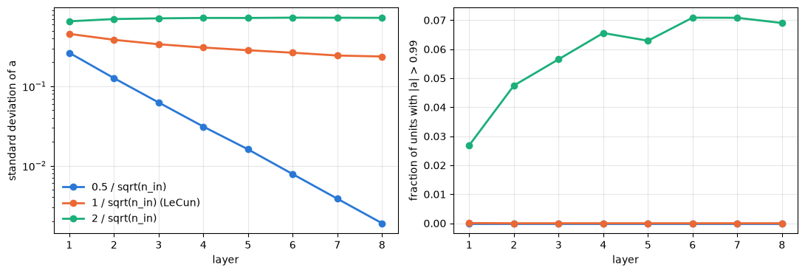
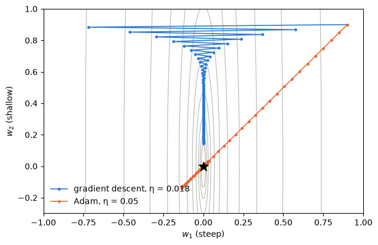

EXOMINTS 2026 · Emulators team
Emulators From Scratch
A course in building a neural-network emulator of FastChem chemistry by hand. Every step is shown as equations, the NumPy code that implements them, and a numerical check, from reading the grid to a trained network and its derivatives.
What you will build
An emulator is a fast function, fitted to examples, that returns what an expensive code would return for the same inputs. Ours takes the six numbers that define a parcel of gas (temperature, pressure, metallicity, and the C/O, S/O and N/O ratios) and returns 19 numbers (the log10 mixing ratios of 18 species and the mean molecular weight), trained on 250,000 FastChem models with equilibrium condensation.
The course is five Jupyter notebooks and one Python file. Each step opens up the machinery in three parts: the maths gives the equations with the shape of every array, and the code writes them out in NumPy rather than hiding them in a library call. A check then confirms the result, usually that the hand-written version agrees exactly with the reusable emulator package, or that a gradient agrees with finite differences. By the end you will have written every line an emulator needs, and Step 6 puts all of them in one file that trains with nothing but NumPy.
| Emulator | Size | Training | Median | 99th pct. |
|---|---|---|---|---|
| Training-set mean | 19 numbers | none | 9.5 | 15.4 |
| Polynomial, degree 5 | 462 terms per output | one SVD, 6 s | 0.72 | 3.0 |
| Nearest neighbours, k = 8 | the whole training set | none | 0.29 | 3.0 |
| NumPy network, 2 × 64, SGD (Step 3) | 5,843 weights | 20 epochs, 5 s | 0.29 | 1.9 |
| One-file NumPy emulator, 3 × 256, Adam (Step 6) | 138,259 weights | 300 epochs, 11 min | 0.022 | 0.24 |
| JAX network, 3 × 256, Adam (Step 4) | 138,259 weights | 300 epochs, 4 min | 0.022 | 0.24 |
Errors in dex: validation set for the first four rows, test set for the last two. Training times on an M1 Max laptop, CPU only.
Before you start
-
Get the code from the GitHub repository, either as a zip (the green Code button, then Download ZIP) or with git. It holds the five notebooks with their outputs, the
emulatorpackage, the one-file emulator, a trained emulator and the environment file.git clone https://github.com/luiswel/emulators-from-scratch.git -
Get the training grid from whoever provides it. For this course that is
training_250k.h5(464 MB, made with FastChem 4.0.4 by the team'schememgenerator), which goes in the top folder of the repository, next toREADME.md. To train on a grid of your own, changedata.load_grid, the only function that knows the file layout. -
Create the Python environment and open the notebooks:
cd emulators-from-scratch conda env create -f environment.yml conda activate emulator cd lessons jupyter labOn Linux, delete the
libblasline fromenvironment.ymlfirst. It selects Apple's Accelerate library, which exists only on macOS and keeps NumPy from loading a second copy of OpenMP next to FastChem's. -
Only Step 5 runs FastChem, to compare the emulator with fresh calculations. The pyfastchem 4.0.4 wheel that pip installs on Apple Silicon is compiled without optimization and runs 10 to 40 times slower than the same code built with
-O3, with identical results. The README's "FastChem on a Mac" section builds it properly in five commands.
| File | What it builds by hand | Run time |
|---|---|---|
lessons/01_the_data | reading the grid, the split, both transforms | 10 s |
lessons/02_baselines | scoring, normal equations, SVD, nearest-neighbour distances | 30 s |
lessons/03_numpy_network | initialization, forward pass, backpropagation, the SGD loop | 35 s |
lessons/04_jax_emulator | vector–Jacobian products, Adam, the JAX training loop | 7 min |
lessons/05_test_and_use | prediction from the saved arrays, the Jacobian | 10 s |
from_scratch/emulator_numpy.py | all of the above in one NumPy file | 20 s |
Run times on an M1 Max laptop, CPU only. The notebooks already contain their outputs, so you can read each one before running it.
Notation
Models are rows and quantities are columns throughout, so a layer multiplies on the right: Z = AW.
| Symbol | Shape | Meaning |
|---|---|---|
| N, D, K, B | numbers | models (250,000), inputs (6), outputs (19), models in a batch |
| X, Y | N × D, N × K | inputs (log10 features) and outputs (log10 values) of every model |
| X′, Y′ | same | inputs scaled to [−1, 1], outputs standardized |
| l, u | D | minimum and maximum of each input over the training set |
| μ, σ, F | K, K, number | mean and standard deviation of each output over the training set, and the floor |
| Wℓ, bℓ | nℓ−1 × nℓ, nℓ | weights and biases of layer ℓ |
| Zℓ, Aℓ | B × nℓ | a layer's values before and after the tanh |
| Δℓ | B × nℓ | ∂L/∂Zℓ, the gradient flowing back through layer ℓ |
| θ, η | all weights, number | the parameters, and the learning rate |
| 𝟙 | N or B | a column of ones (adds a row vector to every row) |
Step 1 · lessons/01_the_data.ipynb
The data, and the transforms by hand
The training set is two matrices
Row i of X ∈ ℝ250000×6 holds the inputs of model i, and row i of Y ∈ ℝ250000×19 its outputs. An HDF5 file is a container of named arrays, and h5py reads each one into a NumPy array:
with h5py.File(GRID_FILE, "r") as file:
X = file["features"][:] # (N, 6): log10 T, log10 P, [M/H], log10 C/O, S/O, N/O
log10_vmr = file["log10_vmr"][:].astype(np.float64) # (N, 18)
log10_mu = file["log10_mean_molecular_weight"][:].astype(np.float64) # (N,)
split = file["split"][:] # (N,): 0 train, 1 validation, 2 test
Y = np.column_stack([log10_vmr, log10_mu]) # (N, 19)Checkdata.load_grid returns the same X and Y (np.array_equal is True for both).
What the inputs look like

The histograms are flat because a Latin hypercube spreads the models evenly along every axis, giving each model its own value of every input. The temperature histogram stops at 57 K instead of 40 K because FastChem failed for every attempt below that, so the emulator is valid only above about 60 K.
A regular grid with as many points would have N1/D = 250,0001/6 = 7.9 points per axis, so neighbouring models sit about 0.23 dex apart in temperature and 1.1 dex apart in pressure, which leaves six dimensions thinly covered. This is the curse of dimensionality, and filling these gaps sensibly is the emulator's job.
What the outputs look like

Nine species sit on the 10⁻³⁰ floor in 40 to 64% of the models, so the network must output exactly the floor over large regions and climb steeply off it elsewhere.

CH4 holds most of the carbon at low temperature and high pressure, and CO at high temperature and low pressure. H2O falls away where water condenses and again where it breaks apart at the hottest, thinnest conditions. TiO drops off a cliff onto the floor where titanium-bearing condensates form, NH3 condenses at the lowest temperatures and gives way to N2 as it warms, and free electrons appear only at high temperature.

Below a condensation point vapour pressure sets the abundance, and vapour pressures go as exp(−E/kT), so log10 VMR falls along straight lines in 1/T (H2O). The TiO panel shows the catch: the grid is uniform in log T, so everything hotter than about 800 K is squeezed into a tenth of the 1/T axis. Step 4 tests which input works better.
Splitting is indexing
train = np.flatnonzero(split == 0) # 200,000 row numbers
val = np.flatnonzero(split == 1) # 25,000
test = np.flatnonzero(split == 2) # 25,000The training set fits the weights, the validation set guides every choice, and the test set is opened once at the end. X[train] is the submatrix of training rows.
The input transform
An affine map, column by column. In NumPy, subtracting a (6,) vector from an (N, 6) array subtracts it from every row, which is the 𝟙cT term.
lower = X[train].min(axis=0) # l, (6,)
upper = X[train].max(axis=0) # u, (6,)
X_scaled = 2.0 * (X - lower) / (upper - lower) - 1.0 # (N, 6)
d = 2.0 / (upper - lower) # the same map as X D + 1 c^T
c = -(upper + lower) / (upper - lower)
X_scaled_matrix = X @ np.diag(d) + cCheckThe two forms differ by at most 8.9 × 10⁻¹⁶, and data.transform_inputs gives exactly the same array (largest difference 0.0). The training rows now run from −1 to +1 in every column.
Scaling matters because the first layer adds up weighted inputs that start from random weights of similar size, so an input spanning nine units would drown one spanning one. Step 2 shows a numerical reason as well. After scaling, any value outside [−1, 1] flags a point outside the training range.
The output transform
FLOOR = -30.0 # the grid's own floor; Step 4 raises it to -15
Y_floored = np.maximum(Y, FLOOR) # (N, 19)
mean = Y_floored[train].mean(axis=0) # mu, (19,)
std = Y_floored[train].std(axis=0) # sigma, (19,)
Y_scaled = (Y_floored - mean) / std # (N, 19)
Y_back = np.maximum(Y_scaled * std + mean, FLOOR) # undo itCheckThe round trip returns Y to 7 × 10⁻¹⁵ dex, every training column has mean 0 and standard deviation 1, and data.transform_outputs gives exactly the same array.
Standardizing puts the 19 outputs on an equal footing in the loss. Without it TiO (spread 9.3 dex) would dominate and the mean molecular weight (spread 0.09 dex) would be ignored. Both transforms use only the training rows, so nothing about the validation or test models leaks into the emulator. From Step 2 on, the lessons call data.fit_input_transform and data.fit_output_transform, which do exactly this.
Exercises
- Write the inverse of the input transform (from X′ back to X) and check it on the test rows.
- Recompute
meanandstdfrom all 250,000 models. How large are the differences, and why would they matter for an honest test? - Plot H2S and HCN against temperature for the near-solar slice. Where does each one reach the floor?
Step 2 · lessons/02_baselines.ipynb
Least squares and nearest neighbours
Simple methods set the bar a network must clear, and they are the cleanest place to see the linear algebra the network generalizes.
Scoring an emulator in dex
For output k and validation model i, the error is eik = |ŷik − yik| in dex, counted only where the true or predicted value exceeds −12, since no spectrum can tell abundances below 10⁻¹² apart. Taking the larger of the two catches both a missed species and an invented one. The score is the median and the 99th percentile of the counted errors for each output, averaged over the 19 outputs.
abs_error = np.abs(log10_pred - y_val_log10) # (25000, 19)
counts = np.maximum(log10_pred, y_val_log10) > -12.0 # (25000, 19), True or False
medians = [np.median(abs_error[counts[:, k], k]) for k in range(19)]
p99s = [np.percentile(abs_error[counts[:, k], k], 99) for k in range(19)]
score = np.mean(medians), np.mean(p99s)| Error in dex | 0.001 | 0.01 | 0.1 | 1 |
|---|---|---|---|---|
| Error in the mixing ratio | 0.2% | 2.3% | 26% | ×10 |
The simplest predictor is the training mean. Each standardized output has mean zero, so this predicts Ŷ′ = 0, which becomes Ŷ = 𝟙μT after the inverse transform, and scores 9.5 dex: the scale of the problem.
Linear regression is a linear system
Put a column of ones (the intercept) next to the scaled inputs to form the design matrix Φ, and predict all 19 outputs at once with a coefficient matrix C. The loss is the squared Frobenius norm of the residuals, and setting its gradient to zero gives the normal equations:
Phi = np.column_stack([np.ones(len(x_train)), x_train]) # (200000, 7)
A = Phi.T @ Phi # (7, 7)
rhs = Phi.T @ y_train # (7, 19)
C = np.linalg.solve(A, rhs) # (7, 19): the best linear model, in one solveChecknp.linalg.lstsq gives the same coefficients to 3 × 10⁻¹⁴. The condition number, which measures how much a linear system amplifies rounding errors, is κ(Φ) = 1.74 and κ(ΦTΦ) = 3.02 = κ(Φ)², because forming ΦTΦ squares it.
Polynomials: more columns, same algebra, solved with the SVD
A polynomial of degree d is still linear in its coefficients. Its design matrix has one column per monomial x′1p₁⋯x′6p₆ with p₁ + … + p₆ ≤ d, which gives (6+d choose d) columns: 7, 28, 84, 210 and 462 for degrees 1 to 5. Each column is a product of input columns, element by element:
monomials = [()] # tuples of column numbers: (0, 3) means x0 * x3
for order in (1, 2):
monomials += list(combinations_with_replacement(range(6), order)) # 28 for degree 2
Phi2 = np.ones((len(x_train), len(monomials)))
for column, monomial in enumerate(monomials):
for index in monomial:
Phi2[:, column] *= x_train[:, index]For higher degrees we solve with the singular value decomposition Φ = UΣVT (orthonormal columns in U, singular values s on the diagonal of Σ, orthogonal V), which never forms ΦTΦ:
Phi5 = baselines.polynomial_features(x_train, 5) # (200000, 462)
U, s, Vt = np.linalg.svd(Phi5, full_matrices=False) # U (200000, 462), s (462,), Vt (462, 462)
C5 = Vt.T @ ((U.T @ y_train) / s[:, None]) # (462, 19)CheckThe hand-built degree-2 matrix equals baselines.polynomial_features, and the SVD solution matches lstsq to 9 × 10⁻¹⁴ (6 s). With scaled inputs κ(Φ) = 69. Built from the raw inputs, where (log P)⁵ reaches −7,776, κ = 3.7 × 10⁷, and the normal equations would face κ² ≈ 10¹⁵, losing 15 of the 16 significant digits of a float64 number. Scaling the inputs is a numerical necessity for least squares, not only a help for the network.

Training and validation errors are nearly identical, so the polynomial is limited by its flexibility (underfitting), and each extra degree helps less. A polynomial is global: to bend at a condensation cliff it has to wiggle everywhere else.

Nearest neighbours: distances as one matrix product
Nearest neighbours has no formula: a prediction is the average of the k = 8 training models closest to the requested point, weighted by 1/distance, close to what interpolating in a precomputed table does. The work is the distances. Expanding the square, all squared distances between M queries Q and the training points come from one matrix product:
Q = x_val[:200] # (200, 6)
D2 = (Q**2).sum(axis=1)[:, None] - 2.0 * Q @ x_train.T + (x_train**2).sum(axis=1)[None, :] # (200, 200000)
nearest = np.argpartition(D2, 8, axis=1)[:, :8] # (200, 8)
distance = np.sqrt(np.maximum(np.take_along_axis(D2, nearest, axis=1), 0.0))
weights = 1.0 / np.maximum(distance, 1e-12)
weights /= weights.sum(axis=1, keepdims=True)
y_pred = np.einsum("qj,qjo->qo", weights, y_train[nearest]) # (200, 19)CheckThe package's k-d tree version gives the same predictions to 6 × 10⁻¹⁵. Brute force needs M × N distances (5 × 10⁹ and 40 GB for all 25,000 validation models), whereas a k-d tree splits the training points into nested boxes so each query only looks inside a few nearby boxes.

Nearest neighbours reaches 0.29 dex, better than any polynomial, but its error falls only as N−1/3: in six dimensions the spacing shrinks as N−1/6 and the interpolation error goes as the spacing squared. Halving the error takes eight times more models. The polynomial was linear in its coefficients, so one solve found them. The network is not, which is why Step 3 has to walk downhill.
Exercises
- Solve the degree-5 problem with the normal equations and compare with the SVD solution. How does the difference relate to κ(Φ)²?
- Try k = 4 and k = 16. Why does a large k make the error worse?
- Time a single nearest-neighbour prediction. Would it be fast enough for a retrieval that calls it a million times?
Step 3 · lessons/03_numpy_network.ipynb
A neural network, by hand
One unit, one layer
A hidden unit takes a weighted sum of its inputs plus a bias and passes it through a smooth step. A layer of n units does this n times, which for a batch of B models is one matrix product:
Entry Zij is unit j's weighted sum for model i. With one input and one output, y(x) = c + Σj vj tanh(wjx + bj) is a sum of smooth steps at positions −b/w with steepness w, and training adjusts all of them:

One unit makes one step, so it takes the cliff and misses the small step. Three units capture both, though not the way you would split the work by hand: two of them are large and partly cancel, because many sets of weights give nearly the same curve.
Starting weights, and why their spread is 1/√nin
A unit adds up nin terms akwk. With independent zero-mean weights of variance s², Var(z) = nin s² E[a²], so s² = 1/nin keeps the signal's size from layer to layer (LeCun initialization):
a = x_train[:2000] # (2000, 6)
for layer in range(8):
n_in = a.shape[1]
W = rng.normal(0.0, factor / np.sqrt(n_in), size=(n_in, 256)) # factor 0.5, 1 or 2
a = np.tanh(a @ W)
Half the LeCun spread leaves a signal of 0.002 after eight layers, so later layers see almost nothing. Double the spread drives 7% of the units into saturation, where tanh′ = 1 − a² ≈ 0 and gradients stop flowing back. LeCun keeps 0.24 (tanh still shrinks it slowly, since |tanh z| < |z|).
The forward pass
W1 = rng.normal(0.0, 1.0 / np.sqrt(6), size=(6, 64))
W2 = rng.normal(0.0, 1.0 / np.sqrt(64), size=(64, 64))
W3 = rng.normal(0.0, 1.0 / np.sqrt(64), size=(64, 19))
b1, b2, b3 = np.zeros(64), np.zeros(64), np.zeros(19) # 5,843 numbers in all
x, y = x_train[:256], y_train[:256] # one batch: (256, 6), (256, 19)
a1 = np.tanh(x @ W1 + b1) # (256, 64)
a2 = np.tanh(a1 @ W2 + b2) # (256, 64)
y_hat = a2 @ W3 + b3 # (256, 19): no tanh on the output
loss = np.mean((y_hat - y) ** 2) # 1.15 with random weightsChecknumpy_mlp.init_params draws the same weights for the same seed, and numpy_mlp.forward gives the same outputs (largest difference 0.0).
The loss L = ‖Ŷ′ − Y′‖F² / BK is, up to a constant, minus the log-likelihood of Gaussian errors with σ = 1 in standardized units, so training is maximum-likelihood fitting. With random weights it is about 1, the data's own spread.
Backpropagation
Write Δ = ∂L/∂Z for a layer's values before the tanh. In index notation Zij = Σk AikWkj + bj, and the chain rule gives three rules, plus one for the tanh:
d3 = 2.0 * (y_hat - y) / y.size # dL/dz3, (256, 19)
gW3 = a2.T @ d3 # (64, 19)
gb3 = d3.sum(axis=0) # (19,)
d2 = (d3 @ W3.T) * (1.0 - a2**2) # dL/dz2, (256, 64)
gW2 = a1.T @ d2 # (64, 64)
gb2 = d2.sum(axis=0) # (64,)
d1 = (d2 @ W2.T) * (1.0 - a1**2) # dL/dz1, (256, 64)
gW1 = x.T @ d1 # (6, 64)
gb1 = d1.sum(axis=0) # (64,)Every gradient has the shape of its weight, and each layer costs two matrix products, so the backward pass costs about two forward passes. The figure shows one training step.
Hand-written gradients are easy to get wrong, so we nudge single weights by ±h and compare with the central finite difference [L(w + h) − L(w − h)] / 2h:
| Weight | Backpropagation | Finite difference (h = 10⁻⁶) |
|---|---|---|
| W₁[2, 5] | 3.84120220 × 10⁻⁴ | 3.84120069 × 10⁻⁴ |
| b₁[7] | −1.07318400 × 10⁻³ | −1.07318399 × 10⁻³ |
| W₂[10, 3] | −5.39299469 × 10⁻³ | −5.39299461 × 10⁻³ |
| W₃[7, 11] | −1.35979744 × 10⁻² | −1.35979745 × 10⁻² |
| b₃[18] | 3.49653632 × 10⁻³ | 3.49653628 × 10⁻³ |
CheckAgreement to seven significant figures, the precision of a central difference with h = 10⁻⁶, and numpy_mlp.backward gives the same gradients (largest difference 0.0).
The training loop
Gradient descent moves every weight downhill, θ ← θ − η ∂L/∂θ. Each step uses a random mini-batch of 256 models, whose gradient is a noisy but unbiased estimate of the full one, and one pass through the shuffled data is an epoch. This is the whole of stochastic gradient descent:
for epoch in range(20):
order = shuffle_rng.permutation(len(x_train))
for begin in range(0, len(order), 256):
batch = order[begin : begin + 256]
x, y = x_train[batch], y_train[batch]
a1 = np.tanh(x @ W1 + b1) # forward
a2 = np.tanh(a1 @ W2 + b2)
y_hat = a2 @ W3 + b3
d3 = 2.0 * (y_hat - y) / y.size # backward
d2 = (d3 @ W3.T) * (1.0 - a2**2)
d1 = (d2 @ W2.T) * (1.0 - a1**2)
W3 -= learning_rate * (a2.T @ d3) # update
b3 -= learning_rate * d3.sum(axis=0)
W2 -= learning_rate * (a1.T @ d2)
b2 -= learning_rate * d2.sum(axis=0)
W1 -= learning_rate * (x.T @ d1)
b1 -= learning_rate * d1.sum(axis=0)CheckTwenty epochs take 5 seconds and bring the validation loss from 0.077 to 0.0079. The package's numpy_mlp.train_sgd, started from the same weights and shuffled with the same seed, ends at exactly the same weights (largest difference 0.0).
This 5,843-number network reaches a median error of 0.29 dex and a 99th percentile of 1.9 dex, matching nearest neighbours on the typical error and beating every baseline on the bad cases.

The learning rate is the most important setting: at 0.03 the loss creeps down, while at 3 each step jumps across the valley instead of down it.
Exercises
- Replace tanh by ReLU, max(0, z): change the activation in the forward pass and its derivative (1 where z > 0, 0 elsewhere) in the backward pass, then rerun the gradient check.
- Add a third hidden layer by hand. Which lines of the loop change?
- Add momentum: v ← 0.9v − ηg, θ ← θ + v. Does it train faster?
Step 4 · lessons/04_jax_emulator.ipynb
JAX, Adam and the training loop
Three upgrades turn Step 3's network into a production emulator: automatic gradients, Adam, and a decaying learning rate. Each one is opened up and checked.
What jax.grad computes
JAX records the operations a function performs and, to differentiate, walks them backwards. Each operation contributes its vector–Jacobian product (VJP): given the gradient with respect to its output, Z̄ = ∂L/∂Z, it returns the gradient with respect to its inputs. For our two operations these are exactly Step 3's rules:
_, matmul_vjp = jax.vjp(jnp.matmul, A, W)
A_bar, W_bar = matmul_vjp(Z_bar)
np.allclose(A_bar, Z_bar @ W.T), np.allclose(W_bar, A.T @ Z_bar) # True, True
_, tanh_vjp = jax.vjp(jnp.tanh, Z)
np.allclose(tanh_vjp(Z_bar)[0], Z_bar * (1.0 - jnp.tanh(Z) ** 2)) # TrueCheckChaining these from the loss back is backpropagation: jax.grad(jax_mlp.loss_fn) matches Step 3's hand-written gradients to 2–5 × 10⁻⁷, the precision of the float32 numbers JAX uses by default. Compiling with jax.jit makes one gradient of a 1024-model batch twice as fast on a laptop CPU (6.6 ms to 3.5 ms).
Adam, by hand
Plain gradient descent uses one learning rate for every weight. Adam keeps, for each weight, running averages of its gradient and of its squared gradient, and steps by their ratio (all operations element by element, step t):
With β₁ = 0.9, β₂ = 0.999 and ε = 10⁻⁸, the averages remember about 10 and 1,000 steps, and the hats undo the bias from starting them at zero. The ratio m̂/√v̂ is about ±1 for a weight whose gradient keeps its sign, so every weight moves by about η per step whatever the size of its gradient. A long, narrow valley, L = ½(100w₁² + w₂²), shows why that matters:
w, m, v = np.array([0.9, 0.9]), np.zeros(2), np.zeros(2)
for t in range(1, 101):
g = np.array([100.0, 1.0]) * w # gradient of the valley
m = 0.9 * m + 0.1 * g
v = 0.999 * v + 0.001 * g**2
w = w - 0.05 * (m / (1.0 - 0.9**t)) / (np.sqrt(v / (1.0 - 0.999**t)) + 1e-8)
Gradient descent must keep its step below 2/100 to stay stable along the steep w₁, and then crawls along the shallow w₂, ending 0.15 from the minimum. Adam ends 0.0012 from it.
CheckOn the network's first step the hats give m̂ = g and v̂ = g², so Adam moves every weight by η · sign(g): for W₁, whose gradients span 5.5 × 10⁻⁵ to 4.6 × 10⁻², the steps all lie between 0.9998η and η. The hand-written step matches jax_mlp.adam_update to 6 × 10⁻⁸ (float32).

The learning-rate schedule
Big steps early make fast progress, and small steps late let the loss settle into the minimum instead of bouncing around it. The formula in NumPy matches jax_mlp.cosine_learning_rate to 2 × 10⁻¹⁹.
The JAX training loop
One compiled step does the forward pass, the loss, the gradient and the Adam update. Around it, each epoch shuffles the training set into 195 batches of 1024 models, then evaluates the validation loss and keeps the best weights so far:
loss_and_gradient = jax.value_and_grad(jax_mlp.loss_fn)
@jax.jit
def train_step(params, state, x_batch, y_batch, learning_rate):
loss, grads = loss_and_gradient(params, x_batch, y_batch)
new_params, new_state = jax_mlp.adam_update(params, grads, state, learning_rate)
return new_params, new_state, loss
for epoch in range(n_epochs):
learning_rate = jax_mlp.cosine_learning_rate(epoch, n_epochs)
order = shuffle_rng.permutation(len(x_train))[: 195 * 1024].reshape(195, 1024)
for batch in order:
params, state, loss = train_step(params, state, x_train_j[batch], y_train_j[batch], learning_rate)
val_loss = float(jnp.mean((jax_mlp.forward(params, x_val_j) - y_val_j) ** 2))
if val_loss < best_val_loss:
best_val_loss, best_params = val_loss, paramsCheckOver three epochs this loop and jax_mlp.train give the same validation losses: 0.03507, 0.01817 and 0.01775.
Choosing settings with short runs
Change one thing at a time and compare validation errors after 40 epochs (about 30 seconds per run). Short runs give the ranking, and the final run trains long once:
| Variant (3 × 256 network, 40 epochs) | Median | 99th pct. |
|---|---|---|
| Floor 10⁻³⁰, log10 T as input | 0.083 | 0.74 |
| Floor raised to 10⁻¹⁵ | 0.056 | 0.55 |
| 1000/T instead of log10 T | 0.157 | 1.30 |
Raising the floor helps: the species that spend half the grid on the floor get a smaller σ, so the standardized loss attends to the part of their range that matters, and the cliffs are shorter. Using 1000/T doubles the error even though the physics is simpler in 1/T, because the grid is uniform in log T and 1/T squeezes the hot models into a tenth of the input range.
The final emulator
Floor 10⁻¹⁵, three hidden layers of 256 tanh units (138,259 weights), Adam with the cosine schedule, batches of 1024, 300 epochs: 300 × 195 = 58,500 Adam steps in about four minutes.

The losses separate slowly after about 50 epochs and the validation loss ends about 30% above the training loss, which is mild overfitting that does no harm here because the validation loss keeps falling and the loop keeps the best weights. The validation errors reach a median of 0.022 dex and a 99th percentile of 0.25 dex. save_emulator writes the weights and both transforms into one 559 kB file of plain arrays:
| Arrays in emulator.npz | Shapes | Role |
|---|---|---|
W_0 … W_3, b_0 … b_3 | 6 × 256, 256 × 256, 256 × 256, 256 × 19, and their biases | the network (float32) |
input_lower, input_upper | 6, 6 | l and u |
output_mean, output_std, output_log10_floor | 19, 19, scalar | μ, σ and F |
input_names, output_names, activation | 6, 19, scalar | labels, and "tanh" |
Exercises
- In the valley, try gradient descent with η = 0.021. What happens, and why does 2/100 set the limit?
- Make the network wider (512) or deeper (four hidden layers) in a 40-epoch run. Which helps more per second of training?
- Change the batch size to 256 and to 4096. What happens to the time per epoch and to the error?
Step 5 · lessons/05_test_and_use.ipynb
Using the emulator, under the hood
Prediction from the saved arrays
with np.load("../runs/emulator.npz") as file:
stored = {key: file[key] for key in file.files}
W = [stored[f"W_{layer}"].astype(np.float64) for layer in range(4)]
b = [stored[f"b_{layer}"].astype(np.float64) for layer in range(4)]
a = 2.0 * (features - stored["input_lower"]) / (stored["input_upper"] - stored["input_lower"]) - 1.0
a = np.tanh(a @ W[0] + b[0]) # (n, 256)
a = np.tanh(a @ W[1] + b[1]) # (n, 256)
a = np.tanh(a @ W[2] + b[2]) # (n, 256)
log10_pred = np.maximum((a @ W[3] + b[3]) * stored["output_std"] + stored["output_mean"], stored["output_log10_floor"])CheckThese eight lines give exactly what the package's TrainedEmulator gives (largest difference 0.0 dex). TrainedEmulator needs only NumPy, so it runs inside any retrieval code, Python 3.8 included.
One model costs 6 × 256 + 256 × 256 + 256 × 256 + 256 × 19 = 137,472 multiply-adds and 768 tanh evaluations: 38 µs when models are predicted one at a time, and 4.2 µs per model in batches of 100 or more, where the vector–matrix products become matrix–matrix products.
The final test
On the 25,000 test models, which played no part in any choice, the median error is 0.022 dex and the 99th percentile 0.24 dex, the same as on the validation set. Per species, the median ranges from 0.0002 dex for He to 0.049 dex for H2S, and the 99th percentile stays below 0.4 dex for every output except C2H2 (0.6 dex) and H2S (1.0 dex). The mean molecular weight is good to 0.0005 dex (0.1%).

The largest errors sit next to the floor, where a species switches on or off. H2S is the hardest output, worst below about 250 K and near S/O ≈ 0.1: below about 700 K most of the sulfur condenses, mainly as FeS with FeS2, Ni3S2 and MnS, so the H2S left in the gas follows a series of sulfide condensates, each adding a kink. All ten worst test predictions are H2S or NH3 colder than 225 K, with errors of 3.6 to 5.8 dex.
Speed against FastChem
| 100-layer atmosphere, M1 Max laptop | Wall-clock time |
|---|---|
| FastChem 4.0.4 built with -O3, condensation (as in the grid) | 0.115 s |
| FastChem 4.0.4 built with -O3, gas phase only | 0.012 s |
| Emulator | 0.00042 s |
The emulator is about 280 times faster than FastChem with condensation and 30 times faster than gas-phase FastChem, with FastChem running the layers in parallel on all cores. It also cannot fail to converge in the middle of a retrieval, and it is differentiable. With the pip wheel of pyfastchem on a Mac, which is compiled without optimization, the same profile takes 2.0 s and 0.083 s, which overstates the emulator's advantage by more than ten times.
Atmosphere profiles

Neither profile appears in the training set. The emulator follows FastChem through the CO–CH4 switch, water condensing at the top of the cool profile and the balance between NH3 and N2. The one visible departure is TiO near 5 mbar in the hot profile, where FastChem drops below 10⁻¹⁵ and the emulator stops at its floor.
Derivatives with respect to the inputs
Gradient-based samplers (HMC, NUTS) and sensitivity studies need ∂ log10 X/∂ inputs. For one model, with sℓ = 1 − aℓ² the tanh derivatives of layer ℓ, differentiating the forward pass gives the Jacobian as a chain of matrix products, and the transforms convert it to physical units:
a = 2.0 * (point - lower) / (upper - lower) - 1.0 # one model, (6,)
s = []
for layer in range(3):
a = np.tanh(a @ W[layer] + b[layer])
s.append(1.0 - a**2) # (256,)
J = (W[0] * s[0]) @ (W[1] * s[1]) @ (W[2] * s[2]) @ W[3] # W * s = W diag(s), (6, 19)
derivatives = J * std[None, :] * (2.0 / (upper - lower))[:, None] # (6, 19)CheckJAX's automatic jax.jacobian of the same forward pass agrees to 4 × 10⁻¹⁴, and central finite differences of TrainedEmulator agree to 3 × 10⁻⁷.
| At 1,600 K, 1 bar, [M/H] = +1 | ∂/∂ log10 T | ∂/∂ log10 P | ∂/∂ [M/H] |
|---|---|---|---|
| log10 H2O | −1.65 | 0.03 | 1.03 |
| log10 CO | −0.07 | 0.00 | 1.01 |
| log10 CH4 | −15.29 | 1.93 | −0.06 |
| log10 NH3 | −4.07 | 1.00 | 0.42 |
| log10 TiO | 48.86 | −0.94 | −0.62 |
| log10 e⁻ | 18.32 | −0.55 | 0.35 |
The emulator has learned the textbook scalings of equilibrium chemistry without being told any chemistry. When CO holds the carbon, CO + 3H₂ ⇌ CH₄ + H₂O makes CH₄ grow as P² and nearly independent of metallicity (1.93 and −0.06). N₂ + 3H₂ ⇌ 2NH₃ makes NH₃ grow as P (N/H)½ (1.00 and 0.42), and thermal ionization makes electrons fall as P−½ (−0.55). H₂O and CO scale with metallicity (1.03 and 1.01), and TiO above its condensate falls as 1/P (−0.94) and rises 49 dex per dex of temperature along its vapour-pressure curve.
Refusing to extrapolate
After the input transform the training range is [−1, 1] in every column, so the check is one comparison. A 40 K layer scales to −1.165 in temperature, and TrainedEmulator raises an error instead of predicting:
x_scaled = 2.0 * (features - lower) / (upper - lower) - 1.0
outside = np.abs(x_scaled) > 1.0 + 1e-3 # True means extrapolatingThe 10⁻³ margin lets through test models that sit a hair (about 10⁻⁵) beyond the training extremes.
Is it good enough?
JWST retrievals typically constrain abundances to 0.1 to 0.5 dex, so a typical emulator error of a few hundredths of a dex adds little, while a 1-dex error at a cliff could bias a retrieval that happens to sit there. The next things to try are training longer or wider, adding FastChem models near the cliffs, and averaging an ensemble of networks trained from different seeds, whose spread also estimates the emulator's own error.
Exercises
- Compute the Jacobian for every layer of the cool profile and plot ∂ log10 X(H2O)/∂ log10 T against pressure. Where does it jump, and why?
- Train a second emulator with another seed and average the two on the test set. How much do the errors drop?
- Use
TrainedEmulatorfrom a Python 3.8 environment without JAX.
Step 6 · from_scratch/emulator_numpy.py
The whole emulator in one file
The file from_scratch/emulator_numpy.py repeats Steps 1 to 5 in plain NumPy, with no machine-learning library: read the grid, split it, build both transforms, draw the weights, then train with hand-written backpropagation and Adam, predict and test. Its core is the backward pass of Step 3 and the Adam rule of Step 4:
def backward(params, activations, y_pred, y_true):
delta = 2.0 * (y_pred - y_true) / y_true.size
grads = [None] * len(params)
for index in reversed(range(len(params))):
a_in = activations[index]
grads[index] = [a_in.T @ delta, delta.sum(axis=0)]
if index > 0:
delta = (delta @ params[index][0].T) * (1.0 - a_in**2)
return grads
def adam_step(params, grads, state, learning_rate, beta1=0.9, beta2=0.999, epsilon=1e-8):
state["t"] += 1
correction1, correction2 = 1.0 - beta1 ** state["t"], 1.0 - beta2 ** state["t"]
for layer, layer_grads, layer_m, layer_v in zip(params, grads, state["m"], state["v"]):
for value, grad, m, v in zip(layer, layer_grads, layer_m, layer_v):
m *= beta1
m += (1.0 - beta1) * grad
v *= beta2
v += (1.0 - beta2) * grad**2
value -= learning_rate * (m / correction1) / (np.sqrt(v / correction2) + epsilon)With its default settings (two hidden layers of 128 units, 40 epochs) it trains in 20 seconds and reaches a median test error of 0.093 dex. With the settings of Step 4 (three layers of 256, 300 epochs, batches of 1024) it matches the JAX emulator, 0.022 dex median and 0.24 dex at the 99th percentile, in about 11 minutes instead of 4. JAX buys speed and automatic gradients, while the accuracy stays the same. Reading the full file from top to bottom is the best test that every piece of this course is clear.
python from_scratch/emulator_numpy.pyBuilding your own emulator
The same steps carry over to any expensive code, whether a chemistry solver, a radiative-transfer model or a cloud model.
- Choose the inputs and their ranges, and sample them with a Latin hypercube or a Sobol sequence. Keep the solver's convergence flags and drop the failed models.
- Set aside a test set that no choice ever touches, and agree on it with your team.
- Take logs of anything that spans orders of magnitude, scale the inputs to [−1, 1] and standardize the outputs, fitting the transforms on the training set and saving them with the weights.
- Decide what error matters in the units of the science (here dex, above a detectability threshold) and score every method that way.
- Fit a polynomial and nearest neighbours first, so you know what the network has to beat.
- Start with a small network (two or three hidden layers of tanh units, LeCun initialization), Adam with a decaying learning rate and batches of about a thousand models, and keep the weights with the best validation loss. Check your gradients against finite differences before training.
- Change one thing at a time in short runs: the floor, how the inputs are presented, the width and depth, the activation.
- Train long once, open the test set once, look for where the errors concentrate, then add models there or average several networks.
- Check every input against the training range and refuse to extrapolate.
Notes on this grid
- Train on a floor of 10⁻¹⁵ rather than the grid's 10⁻³⁰. In 40-epoch runs the median error fell from 0.083 to 0.056 dex, and in 60-epoch runs the worst case fell from 14 to 8.7 dex. A floor of 10⁻²⁰ sits in between, and floors above 10⁻¹⁵ are untested.
- Keep log10 T as the temperature input, because 1000/T roughly doubled the error and feeding both gave the same error as log T alone. tanh beat SiLU in the one comparison we ran.
- Training for 300 epochs halved the median error of a 60-epoch run and the loss was still falling, so a wider network is the next thing to try.
- H2S below about 700 K is the hardest output, because sulfur condenses into a series of sulfides that each add a kink.
- The pyfastchem 4.0.4 wheel that pip installs on Apple Silicon is compiled without optimization (FastChem's wheel workflow sets
CXXFLAGS, which setuptools then uses instead of Python's own-O3). Built from the same source with-O3, one model on one core takes under 1 ms gas-only above 300 K (18 ms below), and 5 ms (above 1000 K), 19 ms (300–1000 K) and 79 ms (below 300 K) with condensation, against 10 to 40 times longer with the wheel. The outputs are identical, so the grid values are unaffected. - The grid is valid only above about 57 K, because every FastChem attempt below that failed.
- Every number on this page uses the split stored in the grid file, so it can be compared directly with anyone else's results on this grid.
Equations at a glance
| Piece | Equation | Code |
|---|---|---|
| Input transform | X′ = 2(X − l)/(u − l) − 1 | data.transform_inputs |
| Output transform | Y′ = (max(Y, F) − μ)/σ | data.transform_outputs |
| Least squares | ΦTΦC = ΦTY′, or C = VΣ−1UTY′ | baselines.fit_polynomial |
| Layer | Aℓ = tanh(Aℓ−1Wℓ + 𝟙bℓT), output layer without tanh | numpy_mlp.forward |
| Initialization | W ~ N(0, 1/nin), b = 0 | numpy_mlp.init_params |
| Loss | L = ‖Ŷ′ − Y′‖F²/BK | jax_mlp.loss_fn |
| Backpropagation | ∂L/∂W = ATΔ, ∂L/∂b = Σ Δ, Δprev = (ΔWT) ⊙ (1 − A²) | numpy_mlp.backward |
| Gradient descent | θ ← θ − η ∂L/∂θ | numpy_mlp.train_sgd |
| Adam | θ ← θ − η m̂/(√v̂ + ε) | jax_mlp.adam_update |
| Schedule | η(e) = ηend + ½(ηstart − ηend)[1 + cos(πe/(E−1))] | jax_mlp.cosine_learning_rate |
| Jacobian | J = W₁diag(s₁)W₂diag(s₂)W₃diag(s₃)W₄ | Lesson 5, Section 7 |
Glossary
- dex
- A difference in log10. 0.01 dex is 2.3%, 0.1 dex is 26%, 1 dex a factor of 10.
- Floor
- The smallest value kept, with anything below it raised to it.
- Standardize
- Subtract the mean and divide by the standard deviation.
- Design matrix
- The matrix Φ whose columns are the functions a linear model combines.
- Condition number
- κ = smax/smin, how much a linear system can amplify rounding errors.
- Epoch
- One pass through the training set.
- Mini-batch
- The models used for one gradient step.
- Learning rate
- The step size η of the optimizer.
- Activation
- The nonlinear function in each hidden unit, here tanh.
- Backpropagation
- Computing the gradient of the loss layer by layer with the chain rule, from the output back.
- VJP
- Vector–Jacobian product: the gradient with respect to an operation's inputs, given the gradient with respect to its output.
- Adam
- Gradient descent with a separate, automatically scaled step size for every weight.
- Jacobian
- The matrix of derivatives of every output with respect to every input.
- Overfitting
- A training error well below the validation error, because the network fits details of the training models that do not carry over.
- Latin hypercube
- A sampling design that spreads points evenly along every input axis.